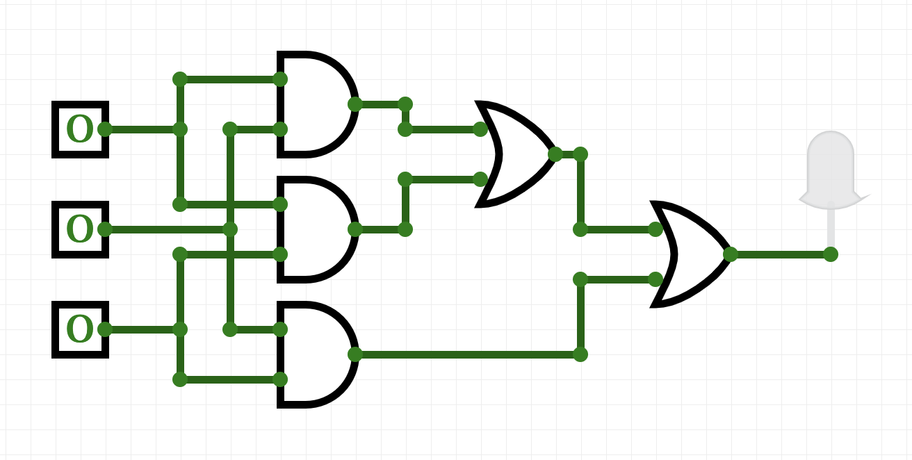

Laboratory Exercise 5
CSCI 127: Introduction to Computer Science
Hunter College, City University of New York
Fall 2025
Learning Objectives:
- Students will represent logical operators as truth tables.
- Students will use logical operators in conditional expressions (if statements).
- Students will build circuits from logical gates.
- Students will translate between logical operators and logical circuits.
- Students will understand Binary Numbers.
- Students will use Unix commands that specify absolute paths.
Software tools needed: terminal (command line), web browser and Python programming environment with numpy and matplotlib packages installed.
1. Logical Expressions & Truth Tables
Last week, we introduced decisions (if-statements). These relied on the "test" which was an expression that evaluated to true or false. We can build up more complicated logical expressions using built-in operators, and, or, and not. Each of these operators as a similar meaning in English. Say we are looking at phones that are different colors and sizes. To abbreviate we will use:
- P for "the phone is purple"
- S for "the phone is small"
- P and S: With
and, we need both parts to be true for the combined statement,P and Qto be true. If either is false (that is the phone is not purple or the phone is not small), then the combined statement is false. We can write this in a table:P S P and S True True True False True False True False False False False False This truth table lists all the possible combinations of values for the inputs,
in1andin2, and whatandwould give as output. For example, ifin1isTrueandin2isFalse, the value ofin1 and in2, can be read off the last column of the third line of the truth table asFalse. - P or S: For this statement to be true, one part of it needs to be true. Either "the phone is purple" or "the phone is small" will make the combined statement true. The only way the combined statement is false is if the phone is not purple and not small. We can write out these conditions in truth table, as we did for
and:P S P or S True True True False True True True False True False False False For example, if
PisTrueandSisFalse, the value ofP or Scan be read off the last column of the third line of the truth table asTrue. - not P: The
notoperator changes trues to falses, and falses to trues. So,not Pis "not (the phone is purple)" so will be true for non-purple phones and false for purple phones. We can write this in the table format above:P not P True False False True
We can use the three logical operators, and, or, and not, to build more complex tests for our if-statements (as well as other control structures that will be introduced later).
2. Using Logical Expressions: Snow Pack in California
As an example of logical expressions, we will use them to estimate the snow pack level in California over the last drought using satellite imagery.
Landsat Satellite Program is a joint program of USGS and NASA that has provided continuous images of the earth since 1972. The data is publicly available through the USGS-EROS site and has been invaluable in mapping changes in the earth. Today, we will use data images from the USGS remote sensing gallery:
http://remotesensing.usgs.gov/gallery/
The snow pack in the Sierra Nevada mountains provide almost a third of the water used by California. As a first estimate of snow pack, the number of pixels that are (nearly) white are counted. How much change has their been in the Sierra Nevada snowpack during the past drought in California? Here are images from before and during the worst years of the drought:
 |
 |
|
| February 2011 | February 2013 | February 2014 |
{kind=link}
How much snow is there? We will use the number of pixels that are nearly white as an estimate of the snow. We can add in a new variable, countSnow to keep track of each time a pixel is nearly white. Here's an outline of our program:
- Import the libraries to manipulate and display arrays.
- Read in the California image and store in the variable, ca.
- Create a new variable, countSnow, to keep track of the number of pixels that are nearly white.
- For each element in elevations,
- If the pixel is nearly white
- countSnow = countSnow + 1
- Print out countSnow.
When is a pixel white? It's when the red, green, and blue values are close to 100%. In code, we would have:
t = 0.75 #Threshold for almost white-- can adjust between 0.0 and 1.0
...
for i in range(ca.shape[0]):
for j in range(ca.shape[1]):
if (ca[i,j,0] > t) and (ca[i,j,1] > t) and (ca[i,j,2] > t):
countSnow = countSnow + 1"""
Name: CSci 127 Teaching Staff
Email: hunterCSci127help@gmail.com
Date: Fall 2025
This program loads an image, counts the number of pixels that are
nearly white as an estimate for snow pack.
"""
#Import the packages for images and arrays:
import matplotlib.pyplot as plt
import numpy as np
ca = plt.imread('CaliforniaDrought_02232011_md.png') #Read in image
countSnow = 0 #Number of pixels that are almost white
t = 0.75 #Threshold for almost white-- can adjust between 0.0 and 1.0
#For every pixel:
for i in range(ca.shape[0]):
for j in range(ca.shape[1]):
#Check if red, green, and blue are > t:
if (ca[i,j,0] > t) and (ca[i,j,1] > t) and (ca[i,j,2] > t):
countSnow = countSnow + 1
print("Snow count is", countSnow)This program assumes that you have downloaded and saved CaliforniaDrought_02232011_md.png to the same directory as your program.
How can you modify your program to let the user specify the input file?
3. Logical Circuits
The logical expressions above are useful not only in designing decisions and selecting data in Python, but the same concept underlies much of the hardware of computers. The and, or, and not can all be simulated in hardware via logic gates. These gates take inputs (usually 0 or 1) and output a value (0 or 1), based on the logical operator it is simulating.
These are standard symbols used to represent logic gates (with input on the left and output on the right; notice that NOT takes 1 input, AND and OR take 2):
Here is a simulator for circuits. Let's see an AND gate in action:
- Try toggling (clicking on) the input on the left of the gate. What happens?
- When does the light turn red?
- When does the light turn off?
Try making a circuit with an OR gate:
What is different between the behavior of the OR and AND gates?
Majority of 3 Inputs
Now, let's build a circuit, or collection of gates, that takes majority of 3 inputs, called in1, in2, in3:
- If two or more of the inputs are True, then your expression should evaluate to True.
- Otherwise (two or more of the inputs are False), then your expression should evaluate to False.
Log into the CircuitVerse website and launch the simulator (green button center-left of the CircuitVerse home page).
Directions (with images) are below:
Build your circuit as you read the instructions below:
- The question asks for 3 inputs-- let's use switches since those are easy to test out whether it works.
- We are going to need to check if any pair of inputs is True. An easy way to do this is to check that:
- in1 and in2 are both true, or
- in1 and in3 are both true, or
- in2 and in3 are both true
Let's start by dragging from the Input drop-down menu 3 input switches (the square with 1 inside -- the 1 will change to 0 once you drag it to the canvas as shown below):
. - We'll build up our circuits in stages:
- To check that in1 and in2 are both true, hook both of them up to an AND gate (in the Gates drop-down menu).
- To check that in1 and in3 are both true, hook both of them up to another AND gate (in the Gates drop-down menu).
- To check that in2 and in3 are both true, hook both of them up to another AND gate (in the Gates drop-down menu).
You can check the wiring by toggling any two switches-- when you toggle the first and the second, the wires going to the first AND gate should be highlighted in bright green. Check the first and the third, and second and third as well, to make sure all is connected right. - We have built each of the three bullets in our to-do list in step 2. above. The list is connected by "or", so, we need to do the same with our outputs:
. - And lastly, let's add an output light that will glow when true:

Test the circuit you just built:
- if two or more switches are on, is the output light on?
- if two or more switches are off, is the output light off?
4. Translating Logical Circuits to Logical Expressions
How do
we represent this as a logical expression? Let's work backwards from the output light:
- Our last gate is an or, so we will write down an or
(lotsOfStuff1) or (lotsOfStuff2) - We'll use parenthesis to keep things neat. Now, let's look at the left hand side (lotsOfStuff1). It also has an or, so we can write it down:
((lotsOfStuff3) or (lotsOfStuff4)) or (lotsOfStuff2) - Let's keep refining our expressions (lotsOfStuff3) has an AND
at the top, so, we will replace it with:
(((lotsOfStuff5) and (lotsOfStuff6)) or (lotsOfStuff4)) or (lotsOfStuff2) - (lotsOfStuff5) is just a wire back to the first input, so, we can
write that instead:
((in1 and (lotsOfStuff6)) or (lotsOfStuff4)) or (lotsOfStuff2) -
and similarly, (lotsOfStuff6) is just a wire back to the second input, so, we can write that instead:
((in1 and in2) or (lotsOfStuff4)) or (lotsOfStuff2) - That looks better! If look at lotsOfStuff4, we see an AND gate with wires back to the first and third inputs:
Similarly, we can replace lotsOfStuff2 with:((in1 and in2) or (in1 and in3)) or (lotsOfStuff2)((in1 and in2) or (in1 and in3)) or (in2 and in3)
Double-check your parentheses to make sure they are balanced (every parenthesis that is opened is also closed and every internal operator is included in a set of parentheses).
Save this line to a text file (you can use any text editor, just make sure to save it as plain text, with no formatting):
"""
Name: Your name here
Email: Your email here
Date: Fall 2025
Computes the majority of 3 inputs
"""
out = ((in1 and in2) or (in1 and in3)) or (in2 and in3)
More Exotic Gates
In addition the AND, OR, and NOT gates, there are several other standard gates. For each, we can build a circuit using just AND, OR, and NOT gates that gives the same output.
What does a NAND gate do?
Toggle the inputs to figure out what the gate does.
Now, build a circuit that has the same behavior as a nand gate (i.e. for the same inputs, both give identical output) using only AND, OR, and NOT gates.
When you have the answer, label your inputs in1 and in2, save the answer in a file:
"""
Name: Your name here
Email: Your email here
Date: Fall 2025
Computes NAND of two inputs, using only AND, OR, and NOT gates
"""
out = ...5. Binary Numbers
In Lab 3 we looked at hexadecimal numbers to represent colors.
Another important number system in computer science is the system of binary numbers. The digital logic design discussed above allows two voltage levels or states:
- false ≡ off ≡ 0 and
- true ≡ on ≡ 1
Each digit in a number has a "position". In the decimal (base 10) system to us so familiar, we know that the possible digits are 0 - 9 and each position is a power of 10. So if we see a 7 in the "ones" position we know it is 7 ones. If we see a 7 in the "tens" position we know it is 7 tens and so on. Thus, the number 77 in base 10 is 7 tens + 7 ones.
In binary (base 2) we have two digits, 0 and 1, and each position is a power of two. In each position we can have either a 0 or a 1, so in the "ones" position we either have a 1 or not. In the "twos" position we either have a 2 or not, in the "fours" position we either have a 4 or not, and so on.
For example, the binary number 11001 has five positions: "ones", "twos", "fours", "eights" and "sixteens" (consecutive powers of two). We have 1 only in the "ones", "eights" and "sixteens" positions, so 11001base2 = 1+8+16 = 25base10. As with hexadecimal, we can also write the numbers with a prefix indicating the base: 0b11001 = 0d25.
Logic gates can thus perform logical operations on binary numbers. We can combine logic gates to do arithmetic on binary numbers, and will do more later in the semester.
6. More on the Command Line Interface: Absolute Paths
Last lab, we introduced relative paths for navigating the directories via the shell. Relative paths (e.g. cd ../) used the current location when executing. We can also use absolute paths that are independent of your location. For example,
$ cd /usr/bin
$ pwd
$ ls
Since it is nice to be able to return to your default, or home directory, there is a built-in short-cut for home (~). Try
$ cd ~
$ pwd
$ lsNext lab, we will introduce scripts, or files of shell commands, that we can execute at the command line.
What's Next?
You can start working on this week's programming assignments. The homework page has problem descriptions, suggested reading, and due dates next to each problem. You should aim to finish the programs in the next week, although the deadlines are several weeks out, to give a buffer just in case.